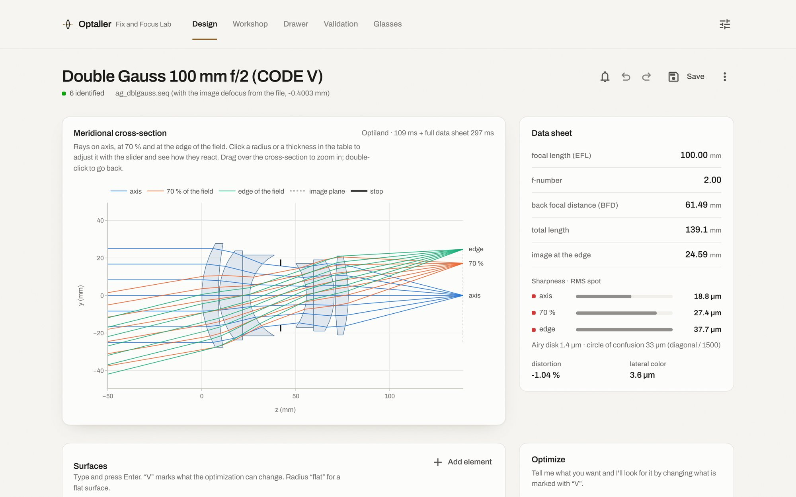

Optical design for photo and cinema lenses, built in a lens workshop.
Diseño óptico para foto y cine, hecho desde un taller de ópticas.
Design a lens and watch the rays react. Check an anamorphic in both axes. See what a rehousing or a recementing will do before you touch the glass. It runs on your computer, offline.
Diseña un objetivo viendo reaccionar los rayos. Comprueba un anamórfico en sus dos ejes. Mira lo que hará un rehousing o un recementado antes de tocar el vidrio. Funciona en tu ordenador, sin conexión.
Free for private individuals. Windows (x64) and macOS (Apple Silicon, macOS 14 or later). Interface and exported files in English and Spanish.
Gratis para particulares. Windows (x64) y macOS (Apple Silicon, macOS 14 o posterior). Interfaz y ficheros exportados en castellano y en inglés.
